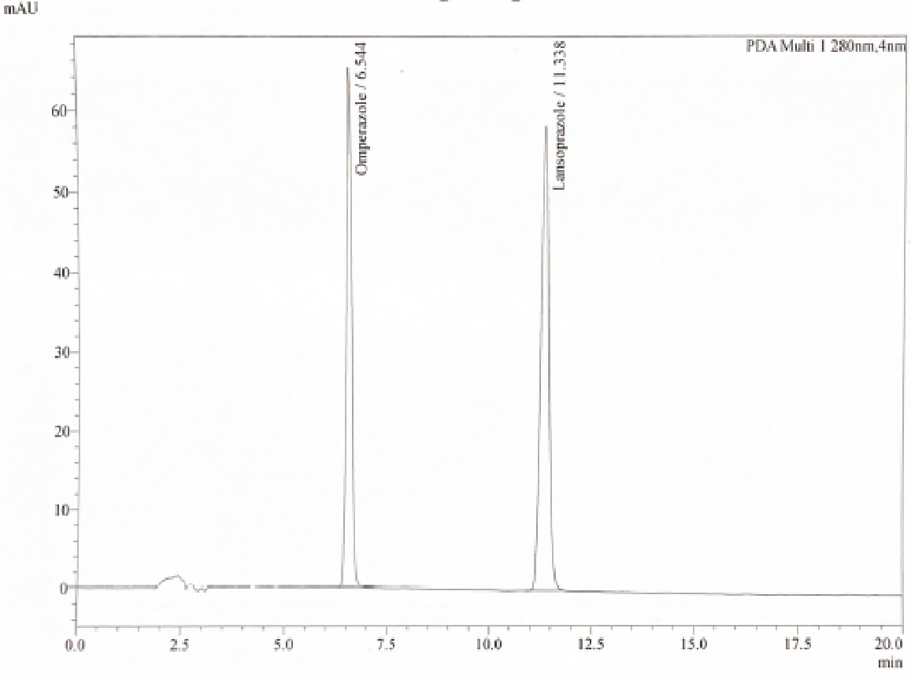
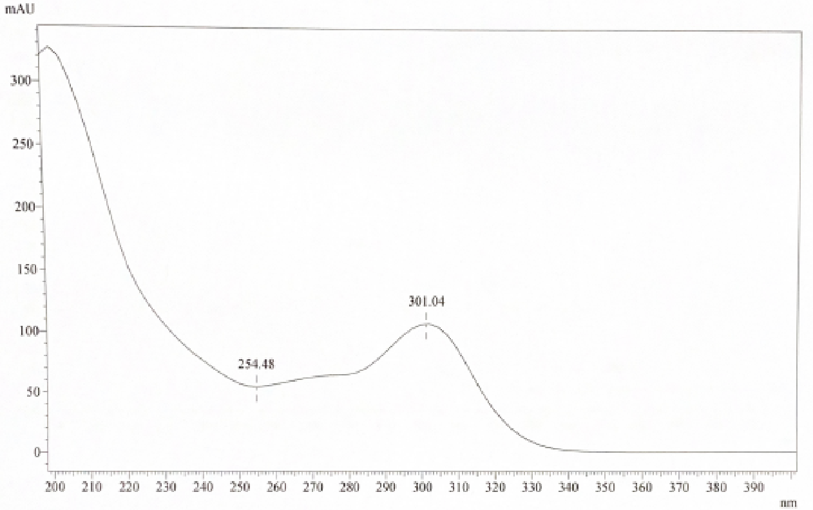
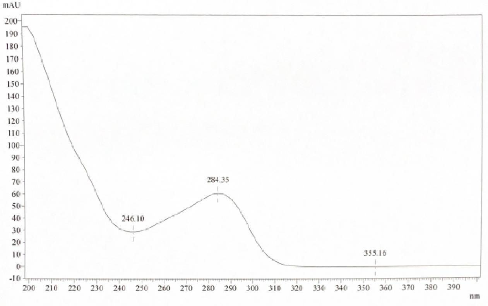

PKKK/300/UP/025 Identifikasi Proton Pump Inhibitor (PPI) dalam Produk Tradisional menggunakan HPLC
- Penyediaan Buffer pH 7.6: Larutkan 3.549 g Na_2HPO_4 kontang dalam 1000 mL air dan selaraskan pH ke 7.6 ± 0.05 dengan asid fosforik sebelum dicampur dengan asetonitril.
- Matriks Kapsul Lembut (Softgel): Bagi sampel kapsul lembut berasaskan minyak, wajib gunakan Kloroform (CHCl_3) sebagai pelarut pengekstrakan kerana gelatin dan minyak tidak larut dalam Metanol.
- Kawalan Suhu Rendah: Pastikan autosampler disetkan pada suhu 4 °C untuk mengelakkan degradasi haba sebatian Omeprazole & Lansoprazole dalam vial.
- Semakan Garis Dasar & IQC: Suntik larutan LOD (15 µL) sebelum sampel pertama, selepas setiap 5 sampel, dan pada akhir turutan suntikan. Peratus perbezaan masa penahanan (% difference RT) mestilah ≤ 3.0%.
|
NPRA PUSAT KAWALAN KUALITI |
ARAHAN KERJA: IDENTIFIKASI PROTON PUMP INHIBITOR (OMEPRAZOLE DAN LANSOPRAZOLE) DALAM PRODUK TRADISIONAL MENGGUNAKAN HPLC | |
| No. Dokumen: PKKK/300/UP/025 | Terbitan / Semakan: Terbitan 2 Semakan 0 | |
| Tarikh Kuatkuasa: 10 April 2026 | Bahagian / Unit: SPPK · Unit Penyaringan | |
0.0 SEJARAH PINDAAN & SEMAKAN
| Terbitan | Semakan | Ditulis Oleh | Disemak Oleh | Diluluskan Oleh | Tarikh Kuatkuasa |
|---|---|---|---|---|---|
| 1 | 0 | Nurul ‘Izzah Hany Ismail | Ooi Suat Hong | Ida Syazrina Ibrahim | 15 Nov 2024 |
| 1 | 1 | Tan Lu Yi | Ooi Suat Hong | Ida Syazrina Ibrahim | 1 Julai 2025 |
| 2 | 0 | Nurul ‘Izzah Hany Ismail | Nurul Nadiah Noh | Ida Syazrina Ibrahim | 10 April 2026 |
Perincian Pindaan & Catatan Log Sejarah Dokumen ▸
Pindaan nombor dokumen daripada PKKK/300/UAT/051 kepada PKKK/300/UP/025.
Pindaan nombor rujukan dalam ruangan Rujukan: PKKK/300/UAT/001 ➔ PKKK/300/UP/001, PKKK/300/UAT/004 ➔ PKKK/300/UP/003, PKKK/300/UAT/012 ➔ PKKK/300/UP/011, PKKK/300/UAT/017 ➔ PKKK/300/UP/016.
Mengemaskini perenggan 7 Rekod Kualiti dengan menambah Borang Persampelan (UP/001A) dan Laporan Pengujian HPLC (UP/005).
Kemaskini 6.6 System suitability test requirement: Kriteria Theoretical plate dikemaskini daripada "(NLT) 1500" kepada "(NLT) 2000".
Menambah kriteria "Relative standard deviation (RSD) of peak area not more than (NMT) 2%".
Menambah perenggan 6.5.6 Internal Quality Control (IQC).
Mengemaskini perenggan 5.4 bagi jawatan Penolong Pegawai Farmasi (U7 / U6).
Mengemaskini perenggan 3 Definisi, menambah perenggan 6.3.4 Single Standard Stock Solution, dan mengemaskini perenggan 6.5.7b bagi spektrum UV (> 0.999 similarity match) serta perenggan 6.5.3 Injection Sequence & IQC Table.
1.0 TUJUAN
Untuk memastikan ujian identifikasi perencat pam proton (Proton Pump Inhibitor - Omeprazole dan Lansoprazole) dalam produk tradisional menggunakan alat Kromatografi Cecair Prestasi Tinggi (High Performance Liquid Chromatography - HPLC) dilaksanakan dengan cekap, tepat, dan berkesan mematuhi piawaian ISO/IEC 17025.
2.0 SKOP
Prosedur ini hendaklah digunakan oleh kakitangan Unit Penyaringan untuk menjalankan ujian identifikasi adulteran sintetik Proton Pump Inhibitor (merangkumi Omeprazole dan Lansoprazole) dalam produk tradisional pelbagai bentuk dos (tablet, kapsul, kapsul lembut/softgel, serbuk, cecair) menggunakan sistem HPLC dengan pengesan Photo Diode Array (PDA).
3.0 DEFINISI
4.0 CARTA ALIRAN
Tiada carta aliran formal berasingan untuk prosedur ini. Ringkasan visual alur kerja makmal dipaparkan pada bahagian atas arahan kerja ini (Visual Workflow Timeline: Penyediaan Reagen ➔ Piawai ➔ Pengekstrakan Sampel ➔ HPLC Isokratik ➔ Penilaian & Rekod).
5.0 TANGGUNGJAWAB
6.0 PROSEDUR KERJA MAKMAL
- ▹ HPLC System: Dilengkapi pengesan Photodiode Array (PDA/DAD).
- ▹ Turus (Column): Zorbax SB C18 (250 mm × 4.6 mm, 5 µm) atau yang setara.
- ▹ Neraca analitikal & mikro (Analytical balance & microbalance).
- ▹ pH meter, kukus ultrasonik (Ultrasonic bath) & Alat emparan (Centrifuge).
- ▹ di-Sodium hydrogen phosphate anhydrous (Na_2HPO_4): Gred Analitikal.
- ▹ Phosphoric Acid: Gred HPLC.
- ▹ Acetonitrile: Gred HPLC.
- ▹ Methanol: Gred HPLC.
- ▹ Chloroform (CHCl_3): Gred Analitikal (untuk sampel Softgel).
- ▹ Air Nyahion (Deionized Water): Rintangan 18.2 MΩ.cm.
- ▹ Omeprazole Reference Standard: Ketulenan disahkan (Primary / Secondary RS).
- ▹ Lansoprazole Reference Standard: Ketulenan disahkan (Primary / Secondary RS).
- ▹ Tiub emparan plastik / kaca (50 mL centrifuge tube).
- ▹ Sistem penuras pelarut vakum (Solvent filter system).
- ▹ Penuras membran nilon pelarut 0.45 µm.
- ▹ Botol pelarut kaca (1 L).
- ▹ Kelalang volumetrik ambar Gred A (5 mL, 10 mL, 20 mL).
- ▹ Penuras picagari nilon 0.45 µm (Nylon syringe filter).
- ▹ Picagari pakai buang tanpa jarum (5 mL).
- ▹ Vial kaca skru penutup ambar (2 mL amber vial).
1. Timbang tepat 3.549 g di-Sodium hydrogen phosphate anhydrous (Na_2HPO_4) dan larutkan dalam 1000 mL air nyahion dalam botol pelarut untuk menghasilkan larutan 25 mM di-Sodium hydrogen phosphate.
2. Goncang sekata dan selaraskan pH larutan kepada pH 7.6 ± 0.05 menggunakan asid fosforik (Phosphoric acid) dengan bantuan pH meter yang telah dikalibrasi.
3. Sukat 1000 mL asetonitril (Acetonitrile) dan pindahkan ke dalam botol pelarut berasingan.
4. Tapis larutan buffer dan asetonitril menggunakan penuras membran nilon 0.45 µm dan sistem penuras vakum.
5. Nyahgas (degas) fasa bergerak yang telah ditapis dalam kukus ultrasonik sekurang-kurangnya selama 20 minit.
Timbang tepat 10 mg piawai rujukan Omeprazole dan Lansoprazole ke dalam kelalang volumetrik ambar 20 mL secara berasingan.
Larutkan dan cukupkan isipadu sehingga tanda senggatan dengan Metanol. Kepekatan akhir bagi setiap larutan stok piawai individu ialah 0.5 mg/mL (500 ppm).
Pipet 0.5 mL bagi setiap satu larutan stok piawai individu (500 ppm Omeprazole & 500 ppm Lansoprazole) ke dalam kelalang volumetrik ambar 10 mL.
Cukupkan isipadu sehingga tanda senggatan dengan Metanol dan campur sehingga sebati. Kepekatan akhir larutan piawai kerja Omeprazole dan Lansoprazole ialah 0.025 mg/mL (25 ppm).
Pipet 1.0 mL larutan piawai kerja campuran (25 ppm) ke dalam kelalang volumetrik ambar 5 mL.
Cukupkan isipadu sehingga tanda senggatan dengan Metanol dan gaul sekata. Kepekatan akhir larutan LOD Omeprazole dan Lansoprazole ialah 0.005 mg/mL (5 ppm).
6.3.4.1 Sediakan larutan stok piawai tunggal mengikut prosedur yang sama seperti dinyatakan dalam 6.3.1 hingga 6.3.3, tetapi menggunakan piawai tunggal berbanding campuran.
6.3.4.2 Prosedur ini digunapakai bagi tujuan ujian saringan sebatian sasaran terpilih sahaja.
6.4.1 Pengendalian Persampelan (Sampling): Proses persampelan berbeza mengikut jenis bentuk dos sampel. Sila rujuk dokumen PKKK/300/UP/001 (Proses Persampelan).
1. Sonikasi semua tiub sampel dalam kukus ultrasonik selama 30 minit.
2. Empar (centrifuge) larutan sampel pada kelajuan 4500 rpm selama 15 minit.
3. Tapis lapisan supernatan menggunakan penuras picagari nilon 0.45 µm ke dalam vial kaca ambar HPLC 2 mL sebelum disuntik.
Sistem HPLC dan parameter instrumen yang digunakan untuk identifikasi Proton Pump Inhibitor (Omeprazole dan Lansoprazole) adalah seperti yang ditetapkan dalam Jadual 1 di bawah:
| Parameter Kromatografi | Spesifikasi / Kaedah Rasmi |
|---|---|
| Turus (Column) | Zorbax SB C18 atau yang setara |
| Dimensi & Saiz Zarah | 250 mm × 4.6 mm, saiz zarah 5 µm |
| Kadar Alir (Flow rate) | 1.0 mL/min |
| Suhu Turus (Column temperature) | 30 °C |
| Suhu Autosampler | 4 °C |
| Pengesan / Wavelength (PDA) | 280 nm (Imbasan Spektrum UV: 200 – 400 nm) |
| Isipadu Suntikan (Injection volume) | 15 µL (Sampel, SST & LOD) |
| Masa Analisis (Run time) | 20 minit |
| Kaedah Fasa Bergerak | Elusi Isokratik (Isocratic Elution) |

Komposisi fasa bergerak isokratik yang digunakan bagi pemisahan Omeprazole dan Lansoprazole ditunjukkan dalam Jadual 2:
| Masa Analisis (minit) | Fasa Bergerak A: 25 mM Na_2HPO_4, pH 7.6 (%) | Fasa Bergerak B: Acetonitrile (%) | Kadar Alir (mL/min) | Mod Elusi |
|---|---|---|---|---|
| 0.01 – 20.00 | 65 | 35 | 1.0 | Isokratik (Isocratic) |
*Rujuk dokumen PKKK/300/UP/003 (RRLC 1200 Series), PKKK/300/UP/011 (HPLC Prominence-i) dan PKKK/300/UP/016 (HPLC Flexar) untuk tatacara persediaan kaedah dan pengendalian perisian HPLC.
1. Mula-mula, suntik Blank (Methanol) sebanyak 1 kali.
2. Suntik Larutan Piawai Kerja Campuran (25 ppm) sebanyak 6 kali untuk Ujian Kesesuaian Sistem (System Suitability Test - SST).
3. Suntik Larutan LOD (15 µL) sebelum memulakan suntikan sampel ujian.
4. Suntik Blank sebelum setiap suntikan sampel bagi mengelakkan limpahan sebatian (carry-over).
5. Setiap sampel disuntik sebanyak 2 kali ulangan (duplicate injection).
6. Sekiranya lebih daripada 5 sampel disuntik dalam satu siri analisis, larutan LOD (15 µL) mestilah disuntik sekali setiap 5 sampel sebagai semakan IQC.
7. Larutan LOD mestilah disuntik pada penghujung siri analisis sebelum batch ditamatkan.
Contoh susunan turutan suntikan bagi batch pengujian ditunjukkan dalam Jadual 3 di bawah:
| No. Turutan | Perincian Suntikan (Vial Content) | Bilangan Suntikan | Tujuan & Catatan |
|---|---|---|---|
| 1 | Blank (Methanol) | 1 | Pembersihan garis dasar (Baseline check) |
| 2 | Working Standard Solution (25 ppm) | 6 | System Suitability Test (SST, %RSD ≤ 2.0%) |
| 3 | LOD Solution (5 ppm, 15 µL) | 1 | Initial IQC Check & S/N Check |
| 4 | Blank | 1 | Menghalang carry-over |
| 5 | Sampel No. 1 | 2 | Ujian Sampel (Duplicate) |
| 6 | Blank | 1 | Wash / Blank |
| 7 | Sampel No. 2 | 2 | Ujian Sampel (Duplicate) |
| 8 | Blank | 1 | Wash / Blank |
| 9 | Sampel No. 3 | 2 | Ujian Sampel (Duplicate) |
| 10 | Blank | 1 | Wash / Blank |
| 11 | Sampel No. 4 | 2 | Ujian Sampel (Duplicate) |
| 12 | Blank | 1 | Wash / Blank |
| 13 | Sampel No. 5 | 2 | Ujian Sampel (Duplicate) |
| 14 | LOD Solution (15 µL) | 1 | Mid-batch IQC Check (Setiap 5 Sampel) |
| 15 | Blank | 1 | Wash / Blank |
| 16 | Sampel No. 6 | 2 | Ujian Sampel (Duplicate) |
| 17 | Blank | 1 | Wash / Blank |
| 18 | LOD Solution (15 µL) | 1 | Final IQC Check (Tamat Batch) |
Ujian kesesuaian sistem perlu dijalankan untuk setiap siri analisis kelompok (batch run) menggunakan sekurang-kurangnya 6 suntikan replikat larutan piawai kerja (25 ppm Omeprazole & Lansoprazole):
Suntikan tunggal larutan LOD (5 ppm) dijalankan sebelum suntikan sampel dan setiap 5 sampel bagi mengesahkan kepekaan pengesan.
Kriteria Penerimaan LOD: Nisbah Isyarat kepada Hingar (Signal-to-Noise ratio, S/N) mestilah Tidak Kurang Daripada (NLT) 3:1.
6.7.1 Suntik 15 µL larutan LOD selepas setiap 5 sampel & pada penghujung siri analisis.
6.7.2 Kriteria Penerimaan IQC: Peratus perbezaan masa penahanan (% difference of retention time) bagi larutan LOD mestilah tidak melebihi 3% bagi setiap kelompok 5 sampel berbanding piawai awal.
Bandingkan masa penahanan dan spektrum UV yang diperolehi daripada kromatogram sampel dengan kromatogram larutan piawai kerja. Identiti sebatian Omeprazole atau Lansoprazole adalah POSITIF jika memenuhi kesemua kriteria berikut:
Sekiranya sampel didapati POSITIF dengan salah satu sebatian PPI (Omeprazole / Lansoprazole), persediaan sampel baharu (new sample preparation & re-analysis) wajib dijalankan oleh penganalisis kedua pada tarikh yang berbeza daripada penganalisis pertama bagi memenuhi keperluan akreditasi ISO/IEC 17025.
Setiap sampel akan mempunyai satu laporan analisis rasmi (Borang UP/005). Laporan mesti merangkumi perincian berikut:
7.0 REKOD KUALITI
| No. Borang / Dokumen | Tajuk Dokumen Rekod Kualiti | Lokasi Simpanan | Tempoh Simpanan |
|---|---|---|---|
| UP/001A | Borang Persampelan (Ujian Penyaringan) | Fail Sampel Unit Penyaringan | 6 Tahun |
| UP/005 | Laporan Pengujian HPLC | Unit Perkhidmatan Analisis (UPA) / Arkib | 6 Tahun |
8.0 LAMPIRAN (OFFICIAL CHROMATOGRAMS & UV SPECTRAL LIBRARY)
Lampiran kromatogram piawai kerja campuran dan profil spektrum UV rasmi bagi sebatian Omeprazole dan Lansoprazole (julat imbasan 200–400 nm) seperti dalam dokumen rasmi Arahan Kerja:


9.0 RUJUKAN DOKUMEN
| No. Dokumen Rujukan | Tajuk Dokumen | Pautan Pantas |
|---|---|---|
| PKKK/300/UP/001 | Proses Persampelan (Ujian Penyaringan) | Buka SOP → |
| PKKK/300/UP/003 | Rapid Resolution Liquid Chromatography (RRLC HP 1200) | Buka SOP → |
| PKKK/300/UP/011 | Shimadzu High Performance Liquid Chromatography (Prominence-i) | Buka SOP → |
| PKKK/300/UP/016 | High Performance Liquid Chromatography Flexar (Perkin Elmer) | Buka SOP → |